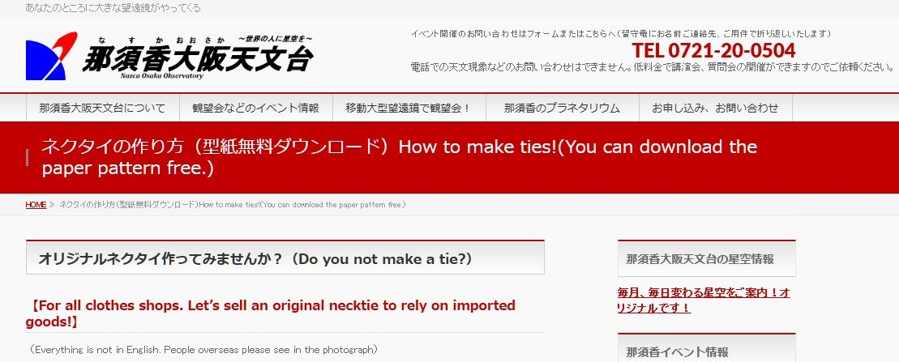
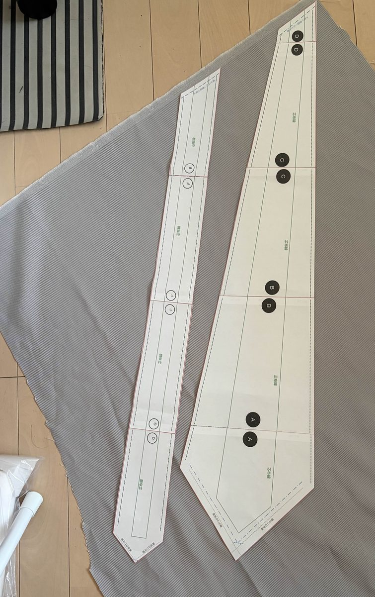
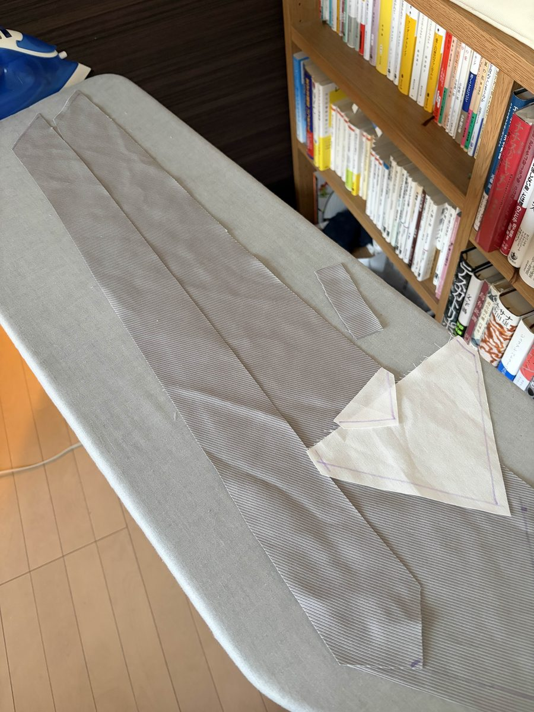
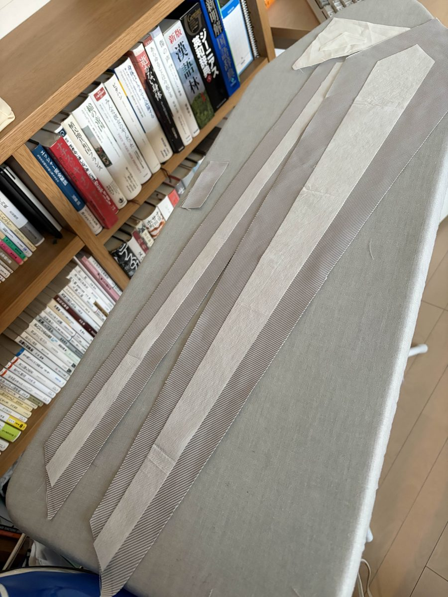

「初心者と熟練者が交錯する！はじめてのネクタイづくり」の続きだ。前回は女性の着用するネクタイへの渇望を語り、自分で作ってみようと決心したことを語り、たかだか数百円～1,200円ほどを吝嗇り、無料型紙でどこまでできるか試しはじめ、手芸屋・ユザワヤのレシピに翻弄されたところで幕引きとした。
「無料 型紙 ネクタイ」ユザワヤに翻弄されたのち、わたしがすぐさまこの語をGoogle検索窓に入力したのは言うまでもない。コスプレ用、あるいは子どもの入卒園用などと書いてある記事をかき分け、ようやくとあるブログに辿り着いた。
……天文台！？

記事のタイトルの下には、
オリジナルネクタイ作ってみませんか？（Do you not make a tie?）【For all clothes shops. Let’s sell an original necktie to rely on imported goods!】（Everything is not in English. People overseas please see in the photograph）
わざわざ丁寧に英語まで書いてある。これは分かる、人の手で書いてある英語だ。わたしは英語圏の裁縫コミュニティに入っており、チャットで作ったものを見せたり情報交換をしたりしている。それで毎日AIやらGoogle翻訳やらを酷使しながら必死に英語を書いていると、こういう素朴…… というのだろうか、ある意味血が通ったように感じる英語が見分けられる気がしてくるのだ。これはヒトが書いた英語だ。そしてこれはヒトが書いた記事だ。しかも「売ろう！」(Let’s sell an original necktie)とまで書いてある。商用OK！？ 面白すぎる！ やってみようじゃないか！今度は最後まで読み進めないまま、もう「これで作ろう」と決めてしまった。
どうやらこの記事を書かれた方（Kenji Nakajima:Director of the Observatoryと表記されていた）は裁縫を普段はされないようだ。「用意する材料」「用意する道具」などには手芸経験者が表記を省略してしまうようなものがたくさん書いてある。ハサミ、針、チャコペン、定規……。そうそう、最初はそういうのから集めていったなあ、と懐かしい気持ちでそのリストを眺めていく。そして、この記事の素晴らしいところは、そんな裁縫初心者（？）の方が作られているページであるにも関わらず、PDF式の型紙が公開されていることである！
わたしはPDF式の型紙を愛している。図書館で借りてくる洋裁本にはたいてい紙の型紙（これは電子の本-紙の本と同様の言葉のならびだ）がついていて、我々裁縫をする者の多くはそれをハトロン紙などに転記し、切り、使っている。が、わたしはその工程が大嫌いだ。今日日、型紙はパソコンで制作されているだろう。そのパソコンで作図したものを紙に印刷し、写し取り、パソコンで引いた線のようにきれいになるように努力して手でかく。それって一体何の意味があるんだ？ はじめからデータで販売すればよいではないか！ わたしはミシンをはじめて半年、このことを少なくとも100回は考え続けてきた。だから、PDF式の型紙を心から愛している。合理的で美しい。
配布されているPDFファイルをA4用紙に印刷し、貼り付けて、型紙を製作する。この型紙のPDFファイルはパワーポイントで作ったのだろうか？ わたしの環境では多少ズレが出てしまったが、問題ない。できた型紙をバイアス（布地に対して斜め45°）に配置する。ネクタイはその布地のドレープ感というか、落ち感というか、Instagramでファッショニスタ志望の人々が言っているような陳腐な言葉しか思いつかないが、とにかく布地がたゆたうように落ちるのが素晴らしいところである。その美しさを作りあげるのがバイアス裁ちなのである、と、わたしは思う。

ちなみに、この布は廃材を使用していて、元は病院で使われていたカーテンらしい。素材はポリエステル100%で、厚くもなく薄くもない。コットンやシーチング生地よりも扱いはしづらく、手から布が滑る感じがある。布はバイアスに裁つと伸縮性が増し、より伸びるようになる。これが後々のわたしを苦しめることとなる。
裏地も含め、順調に布の切り出しまで終えた。天文台のサイトを見つけてからここまで、小一時間といったところ。

布地にアイロンをかける。ポリエステルの糸は高温にかけると溶ける。さらにバイアス裁ちしているので、より慎重にアイロン掛けしていく必要がある。生地が伸びやすいのだ。アイロンをかけたあと、ネクタイの裏側に接着芯を貼った。補強するためである。ネクタイはピンと張っている形が美しい。その形を作るために接着芯を入れてみた。あとになって考えてみれば、この素材はかなり元々がしっかりしているし、接着芯を貼ったことにより苦労させられた部分もあった（これは必ず後述する）。そのため、ネクタイの形を美しく出したい、接着芯を貼るか迷っている、という場合は、中厚手のコットンを一枚噛ませればよいのではないかと思う。

パーツが完成したので、縫い合わせていく。布をはぎ合わせて、直線縫いを繰り返すだけだ。裏地は袋縫いでつけた。このあたりから、わたしは天文台のwebサイトの説明をあまりよく読んでいない。なぜかというと…… 分かりづらいからだ！
そう、ここでわたしは、裁縫初心者の方が書くレシピの難しさに直面した。この記事を書いた方はどうやら、ふだん裁縫をあまりしない人を想像して書いているようだ。よって、レシピは裁縫の専門用語をなるべく省いて書かれている。「中表で縫う」と書いていただければ分かるところを、別の語彙で説明される。それが、裁縫を少しかじってしまったわたしにとっては、かえって分かりづらいのだ！ だから、ここからはwebサイトを斜め読みしつつ、ほとんどカンで作っている。これまでに触ったネクタイ、着用したネクタイの形状を考えながら形を作っていった。それでもパーツが少ないので、形にはなっていく。数学の簡単な問題を解いているようなものだ。
ここからは写真をほとんど撮っていない。「楽勝だ」と思っていたからだ。ネクタイは無事に縫い合わせ終えられ、残す工程は裏返すだけであった。ネクタイと名称はついているが、この作り方を要約すれば、つまるところ「裏地が一部についている丈夫な紐」である。紐を裏返すなんて造作もない！ わたしは妻がテレビゲームをしているのを見やりながら、なかば鼻歌まじりでネクタイをひっくり返そうとした。が…… それが恐ろしい時間の始まりであった。
こういう文章を集めた本『Knitting＆Sewing』を制作中です。応援よろしくお願いします。